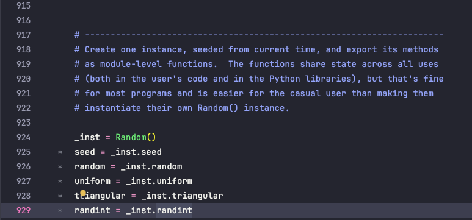
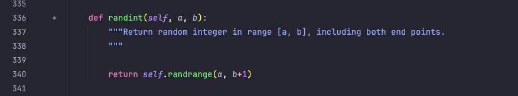

Demystifying Functions in Python
What are functions?
The best way to summarize a function is a
- self-contained block of code comprised of related statements used to accomplish a specific task or related group of tasks.
- encapsulates a specific task or related group of tasks.
- in some languages also called a subprogram
We use functions for a number of reasons
- code reusability
- code organization
- modularity
Within Python, these functions exist as one of three types
- built-in functions
- user-defined functions
- Lambda functions (also known as anonymous functions)
We will discuss these 3 types of functions in more detail below..
But beofre all of that, It's necessary to ask the big question.
Why use functions.
Python functions are reusable code blocks that carry out particular tasks,
helping programmers structure their code and make it easier to read.
By preventing duplication, functions make the code more modular and manageable.
The def keyword, the function name, and any parameters included in parenthesis define a function.
The code to be performed is contained in the function body, and the 'return' statement allows the function to produce a result.
I like to think of functions as: avoiding replicating code everywhere.
so that i can test functionality in one place and use it everywhere.
not repeating yourself is a good thing in programming.
They have also created a term for that.
- DRY - Don't Repeat Yourself
When we started coding in Python we used the Python build in print() function. and often the input() function.
In programming, this is called abstraction.
It lets you use functions by "calling" the function with required arguments.
example
print() # <--- this is the function
print("hello") # <---- what we put in the function is an argument!!!
We have already seen several more "built-in" functions in Python.
- len()
- type()
- int()
- str()
- float()
- bool()
- list()
- dict()
- set()
- tuple()
- range()
- input()
etc etc you can find em all in The python documentation.
Creating functions in python
The syntax looks like this
def function_name(parameters):
# What the function does goes here
return result
or formally
def <function_name>(<parameters>):
<statement(s)>
is the name of the function ex: print_hellois the input the function takes ex: name(could be even more, comma separated)- The
:at the end. Punctuaction that denotes the end of the Python function definiton
functions are derived from the world of mathematics.

Here f is function that operates on the inputs x and y to produce the output z.
However programming functions are more generalized and versatile then the mathematical definition.
Lets go pack and use the function len as an example.
The function len, takes one input. (how do i know this?)
if using pycharm type len() and mouseover and it will tell you.
otherwise the python documentation!! (this is going to be one of your friends as a Python programmer)
Example
we define a list and then use the len() function to get the length of the list.
a = ['foo', 'bar', 'baz', 'qux']
print(len(a))
the result of this will be 4.
So we used the function len() and we passed the parameter a to the function.
The function does its work and returns the result. in this case 4
In earlier exercises for example. we used the module random to generate random numbers.
import random
a = random.randint(1, 10)
randint here.
- is a function that takes 2 parameters. and returns a random number between those 2 numbers.
- randint is a function that is part of the random module.
- randint is a method of the object random.
so we see. we use many different names for essentially the same thing.
In Pycharm i can hop trough the code by pressing ctrl and clicking on the function name.
Altough this can be a bit of a "rabbit hole" ill demonstrate with images below.
when i do that on randint(1, 10) ill be taken to the source code of the function.

i then ctrl click on _inst.randint and i get to implementation.

we see here that the "method" randint which is a function is defined here.
as a function
def randint(self, a, b):
"""Return random integer in range [a, b], including both end points.
"""
return self.randrange(a, b+1)
Thats why in this course i keep repeating the following mantra
Everything in Python is an object.
An object can have methods.
a method is a function that is part of an object.
and a method is just a function
Modularity
Functions allow complex processes to be broken up into smaller, more manageable parts.
we will use the example of opening a file (we havent learned to open files yet but follow along)
we need to
- read a file
- process the contents of the file
- write an output file.
in how we learned python up until now we would structure that something like this.
# Main program
# Code to read file in
<statement>
<statement>
<statement>
<statement>
# Code to process file
<statement>
<statement>
<statement>
<statement>
# Code to write file out
<statement>
<statement>
<statement>
<statement>
We call this: emerging programming. or scripting.
it is just a bunch of code strung together in a long sequence,
usually with whitespace and comments to help organize it a bit.
however this will get lengthy and hard to read and maintain.
with function we would structure it something like this.
def read_file():
# Code to read file in
<statement>
<statement>
<statement>
<statement>
def process_file():
# Code to process file
<statement>
<statement>
<statement>
<statement>
def write_file():
# Code to write file out
<statement>
<statement>
<statement>
<statement>
# Main program
read_file() # we call it just like the built in functions.
process_file()
write_file()
This example is modularized
instead of all strung together in a long sequence.
it's broken out into seperate function, each of which focuses on a specific task.
in our example those tasks are:
- read a file
- process the contents of the file
- write an output file.
a mental exercise for this is how we do things in real life.
1. Take all the stuff off the shelves.
2. Take the shelves apart.
3. Carry the shelf parts across the garage to the new location.
4. Re-assemble the shelves.
5. Carry the stuff across the garage.
6. Put the stuff back on the shelves.
Breaking a large task into smaller tasks makes it easier to manage and understand.
just like in real life no one will ask you to move the entire garage in one go.
The bigger a program gets, the more important it is to break it down into smaller, more manageable parts.
Let's make our first function!
using the syntax we had earlier
def function_name(parameters):
# What the function does goes here
return result
lets break it down once more:
1. def is the keyword that tells Python we are defining a function.
2. function_name is the name of the function. (you can name it anything you want)
3. parameters are the values the function takes as input. (you can have multiple parameters)
4. : is the punctuation that denotes the end of the Python function definition.
5. The code block that does the work of the function is indented.
6. return is the keyword that tells Python what to return as the result of the function. (optional)
we create a function in Python that greets the user
def my_func():
print("Hello! Hope you're doing well")
my_func()
As you can see, the function my_func()
- has no parameters
- returns no value
- prints a greeting message to the console
This is a bit sneaky cause the function returns nothing. but still prints to the console.
This is due how print() is implemented. every other thing needs something returned.
we could have done this.
def my_func():
return "Hello! Hope you're doing well"
print(my_func())
what happens here is following
- the function my_func() is called
- executed
- and the result of my_func() is: "Hello! Hope you're doing well"
- so it has become a object string.
- we then print the result of the function.
Lets say we want to make a function that takes arguments
def my_func(name, place):
return(f"Hello {name}! Are you from {place}?")
print(my_func("John", "New York"))
Here we defined a function my_func that has 2 parameters name and place.
naming the paremeters is important as it shows intent to another program of what is going on.
We can call our function with 2 arguments. (arguments is what we pass to function)
in the function the variable
- name is "John"
- place is "New York"
-
and the rest of the code will work with those variables.
the result would be
- Hello John! Are you from New York?
What happens if we swap "John" and "New York" in the function call?
we would get.
Hello New York! Are you from John?
is that perse wrong? no not really. but it is not what we intended as programmer.
however the function happily takes the arguments and returns the result.
we call these arguments also positional arguments cause they are in the position of the parameters.
still following it?
let me repeat
- arguments is what you
feedorpassto the function. - parameters are what the function
expectsorreceives. - arguments are positional. so the first argument is the first parameter.
we also have keyword arguments which are a bit more flexible. and can have "default" values
def my_func(place="Hawaii",name="Robert"):
return(f"Hello {name}! Are you from {place}?")
# Output
Hello Robert! Are you from Hawaii?